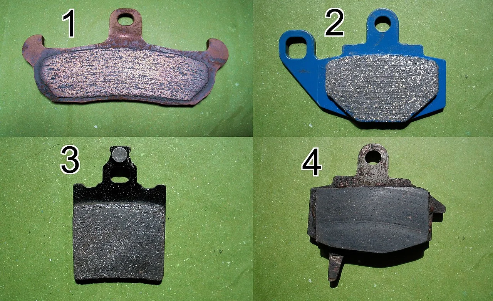

▲ 고속도로 주행 차량들. 장거리 운전 전 기본 점검이 명절 정체 속 고장을 예방한다 ⓒ CarPrism
명절 장거리 운전 중 가장 피하고 싶은 상황은 꽉 막힌 고속도로 한복판에서 차가 멈추는 것이다. 다행히 이런 상황의 상당수는 출발 전 5분짜리 점검으로 예방할 수 있다.
1. 타이어 — 폭염을 견딘 직후라 더 중요하다

▲ 지방 고속도로 주행 모습. 여름철 폭염 이후인 9월엔 타이어 상태 점검이 특히 중요하다 ⓒ CarPrism
타이어는 장거리 운전 전 가장 먼저 확인해야 할 항목이다. 특히 9월은 여름철 폭염과 뜨거운 아스팔트를 거친 직후라, 타이어 고무가 평소보다 더 마모됐을 가능성이 있다. 공기압이 적정 수준인지, 트레드 마모가 심하지 않은지, 옆면에 균열은 없는지 육안으로 확인하고, 스페어타이어(또는 리페어 키트)가 정상 작동하는지도 함께 점검하자.

▲ 타이어 트레드 마모 한계선. 마모 한계선까지 닳았다면 즉시 교체가 필요하다 ⓒ CarPrism
2. 엔진오일·냉각수·워셔액 — 잔량부터 확인

▲ 엔진오일 딥스틱 점검. 잔량과 색상을 함께 확인해 교체 주기가 임박했는지 판단할 수 있다 ⓒ CarPrism
엔진오일 잔량과 색상을 확인하고, 교체 주기가 임박했다면 출발 전 미리 교체하는 것이 안전하다. 냉각수 역시 잔량이 부족하면 정체 구간에서 엔진 과열로 이어질 수 있어 반드시 확인해야 한다. 갑작스러운 비 예보가 있다면 와이퍼 작동 상태와 워셔액 잔량도 함께 점검하자.

▲ 냉각수 보조탱크. 잔량이 최소·최대 눈금 사이에 있는지 출발 전 육안으로 확인하자 ⓒ CarPrism
3. 배터리 — 시동이 늦게 걸린다면 신호다

▲ 배터리 단자 점검. 부식이나 헐거움이 없는지 확인하고, 사용 연수가 오래됐다면 출발 전 미리 점검받는 것이 좋다 ⓒ CarPrism
최근 시동을 걸 때 평소보다 늦게 걸리거나 크랭킹 소리가 약해졌다면, 배터리 수명이 다해가고 있다는 신호일 수 있다. 명절 정체 구간에서 배터리 방전으로 시동이 꺼지는 것만큼 곤란한 상황도 드물다. 배터리 사용 연수가 3년을 넘었다면 출발 전 점검을 받아보는 것이 좋다.
4. 브레이크 패드 — 정체 구간의 숨은 소모품

▲ 마모 상태가 다른 브레이크 패드 비교. 두께가 얇아졌다면 출발 전 정비소에서 교체 여부를 확인하자 ⓒ CarPrism
명절 정체는 가다 서다를 반복하는 저속 주행이 길게 이어지는 구간이다. 이 과정에서 브레이크 패드 마모가 평소보다 빠르게 진행될 수 있다. 브레이크를 밟을 때 이상한 소음이 나거나 페달 감이 평소와 다르다면, 출발 전 정비소에서 패드 두께를 확인받는 것이 안전하다.
5. 정리
체크포인트
- 타이어 공기압·마모는 여름 폭염 직후인 만큼 더 꼼꼼히 확인하자.
- 엔진오일·냉각수·워셔액 잔량을 출발 전 미리 점검하자.
- 시동이 평소보다 늦게 걸린다면 배터리 점검을 받아보자.
- 정체 구간의 잦은 제동에 대비해 브레이크 패드 상태도 확인하자.